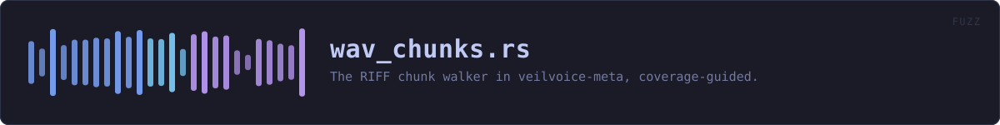

fuzz/fuzz_targets/wav_chunks.rs
fuzz · 46 lines · read the source here · or on GitHub
The RIFF chunk walker in veilvoice-meta, coverage-guided.
This one walks a flat list of chunks whose sizes come from the file, so its termination depends on values an attacker chooses -- the shape F-4 had.
The interesting property is not only "does not crash": a cleaned WAV is handed back to the user as safe, so it has to actually be a WAV, and its RIFF size field has to describe the bytes that were written. A cleaner that returns a corrupt file has failed even though it did not panic.
WHAT CALLS WHAT
This file defines no functions of its own.